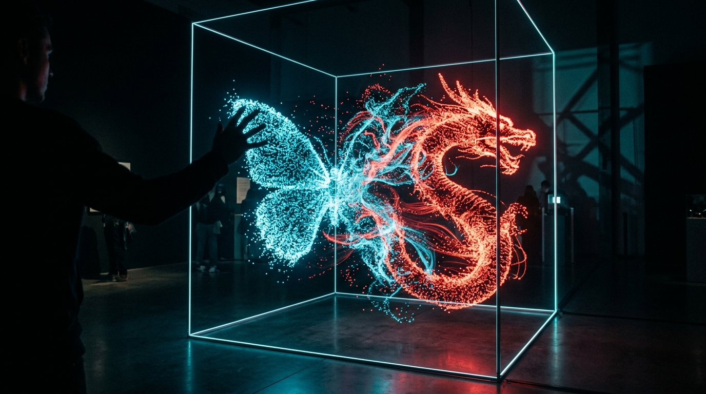
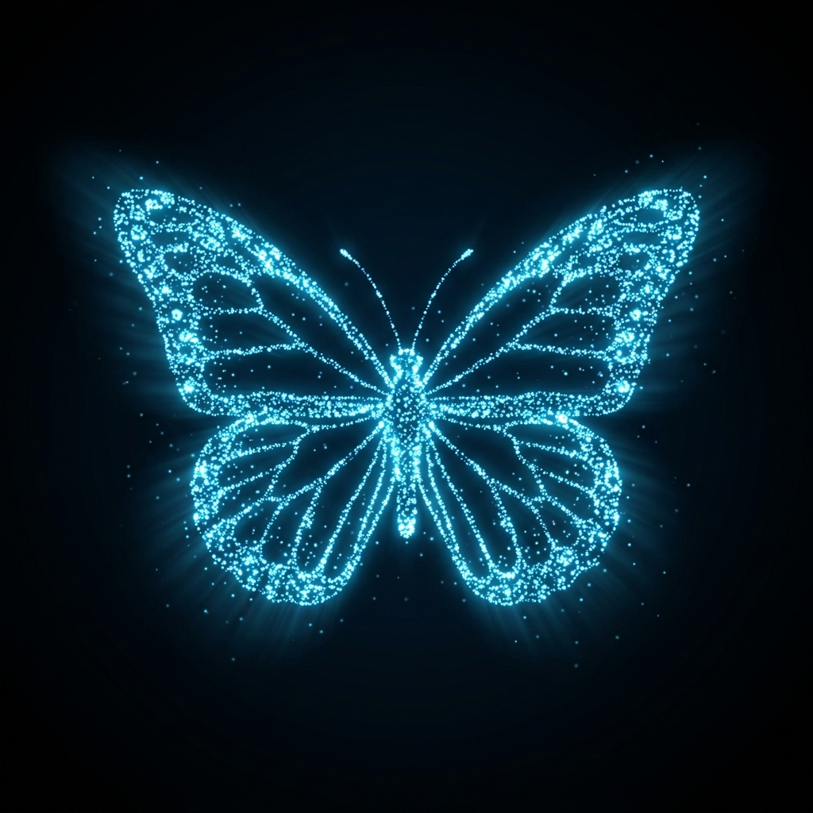
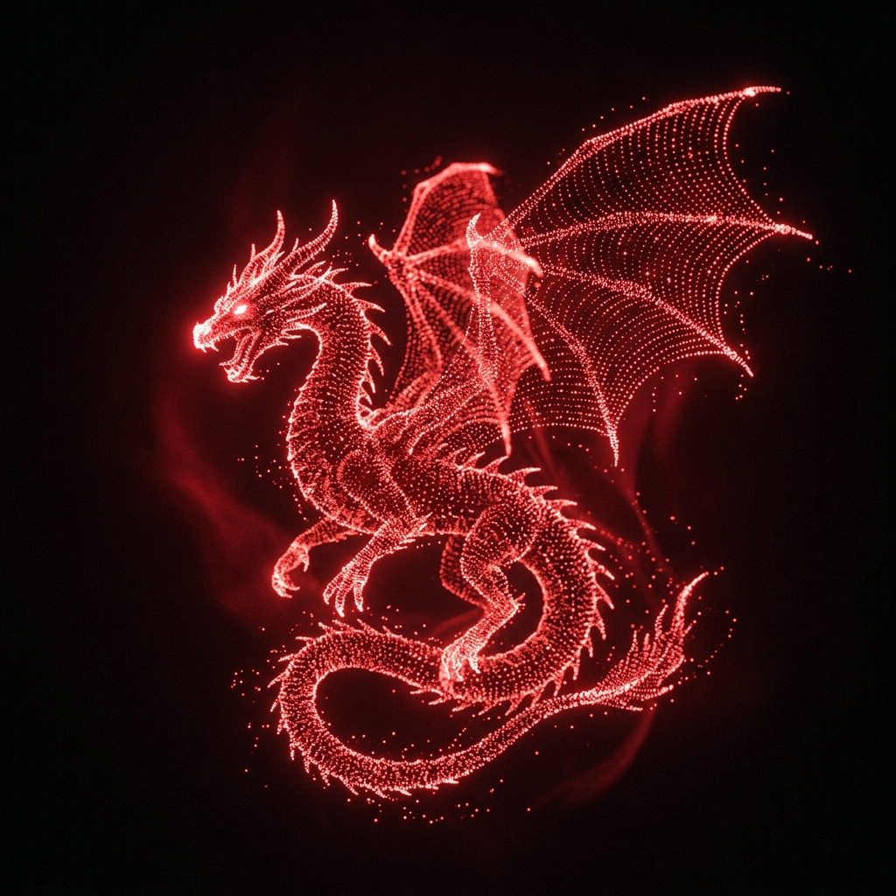
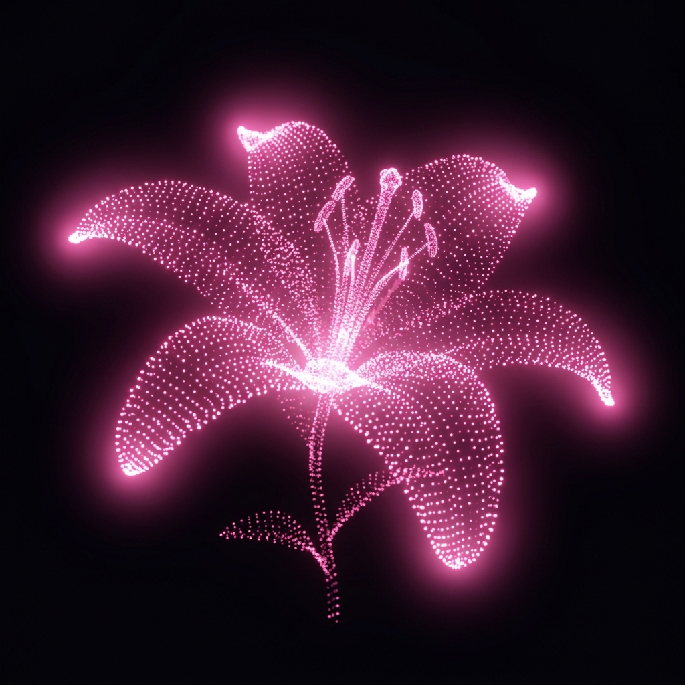

Webcam hand gestures morph 10,000 floating particles between a blue butterfly, red dragon, and dark pink lilies inside a glowing wireframe cube.

Morphora is a real-time interactive art installation that bridges the physical and digital worlds. Using computer vision and custom GLSL shaders, it transforms hand gestures into breathtaking 3D particle transformations.
MediaPipe's AI-powered hand landmarker detects 21 landmarks per hand at 30+ FPS with sub-pixel accuracy.
Custom gesture classifier using palm-center-relative distances with hysteresis pinch detection and stability buffering.
GLSL vertex shader interpolates 10K points with turbulence, swirl, and radial explosion for organic transitions.
Glowing wireframe cube with gesture-triggered open animation — the final reveal after morphing through all three forms.
Each form is a 10,000-point cloud with distinct color identities and organic distribution. GLSL shaders morph particles between shapes with turbulence and swirl effects.

Wings: #00C2FF · Body: #0A0A0C
Twin ellipsoid wings with 4,550 points each, connected by a 900-point body spine.

Highlights: #FF1E2D · Body: #5C0A0A
Serpentine spine with sinusoidal wave motion, 6,200 body points and 1,900-point wings.

Center: #C2185B · Edges: #FFF8F0
Eight radial petals with distance-based gradient, 1,800-point center with bloom highlights.
Five distinct gestures drive the state machine through six states. Edge-triggered detection with stability buffering ensures reliable gesture recognition.
Close left fist then open palm to trigger the first morph. Particles swirl from cyan to crimson.
Same gesture, next morph. Dragon particles dissolve and reform into blooming lily petals.
Pinch with right hand on the lily form to trigger the wireframe cube's open animation and glow effect.
Open both palms to reset the entire system. Particles snap back to the initial butterfly formation.
Python owns gesture truth; TouchDesigner owns visual truth. They communicate via OSC UDP on port 7000.
/gesture/state
/gesture/event
/gesture/left
/gesture/right
/gesture/alive
Core gesture detection engine with real-time webcam processing and timed state machine.
Google's hand landmarker model — 21 keypoints per hand with GPU-accelerated inference.
Webcam capture, frame processing, mirror flip, and real-time debug overlay rendering.
UDP-based Open Sound Control protocol bridging Python and TouchDesigner in real time.
Real-time 3D rendering engine — SOPs for geometry, CHOPs for timing, TOPs for compositing.
Custom vertex + fragment shaders with noise, swirl, and bloom for cinematic particle effects.
Two processes, one experience. Start the Python gesture sender, then open the TouchDesigner network.
git clone https://github.com/atharvawagh-03/Morphora.git
cd Morphora/python
python -m venv venv
venv\Scripts\activate
pip install -r requirements.txtpython main.pyThe hand landmarker model auto-downloads on first run (~10MB).
exec(open(r'D:/Morphora/touchdesigner/scripts/build_network.py').read())Auto-builds the entire TD network — OSC, timers, model SOPs, GLSL, and render pipeline.
# OSC monitor (Terminal 2)
python test_osc_monitor.py
# Simulate gestures (no webcam)
python simulate_gestures.py
# Unit tests
python test_state_machine.pyMorphora/
├── python/ # Gesture detection + OSC sender
│ ├── main.py # Entry point — webcam loop
│ ├── config.py # All thresholds & constants
│ ├── hand_tracker.py # MediaPipe Tasks wrapper
│ ├── gesture_detector.py # Geometric classifier
│ ├── state_machine.py # 6-state FSM
│ ├── osc_sender.py # python-osc client
│ ├── simulate_gestures.py # OSC demo (no webcam)
│ ├── test_state_machine.py # Unit checks
│ └── test_osc_monitor.py # Live OSC listener
│
├── touchdesigner/ # TD project & assets
│ ├── main.toe # Main TD project file
│ ├── SETUP.md # Build guide
│ ├── models/ # 10K-point OBJ clouds
│ ├── shaders/ # GLSL vert + frag
│ └── scripts/ # Auto-build + handlers
│
├── tools/ # Point cloud generator
├── assets/ # Textures & references
└── docs/ # Testing & troubleshooting